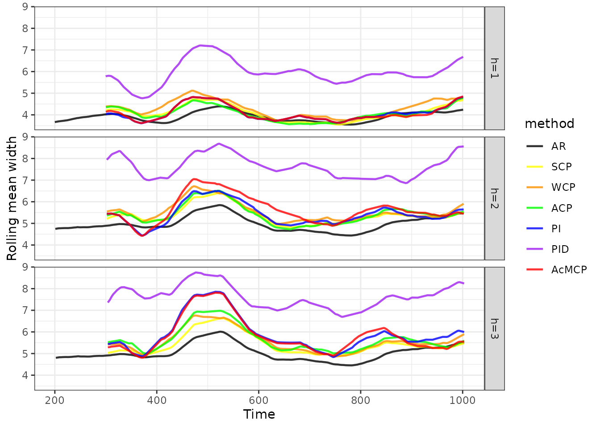

The conformalForecast package provides some commonly used conformal prediction methods for time series forecasting.
library(conformalForecast)
library(forecast)
library(ggplot2)
library(dplyr)
library(tibble)
library(tsibble)Data simulation
Suppose we are interested in forecasting a time series data generated from an AR(2) model with , , and .
Time series cross-validation
We first train a forecasting model AR(2) on a rolling forecast origin to generate forecasts and forecast errors on validation sets.
far2 <- function(x, h, level) {
Arima(x, order = c(2, 0, 0)) |> forecast(h = h, level)
}
fc <- cvforecast(series, forecastfun = far2, h = 3, level = c(80, 95),
forward = TRUE, window = 100, initial = 1)
summary(fc)
#> Cross-validation
#>
#> Call:
#> cvforecast(y = series, forecastfun = far2, h = 3, level = c(80,
#> 95), forward = TRUE, initial = 1, window = 100)
#>
#> fit_times = 901 (the forward step included)
#>
#> Forecasts of the forward step:
#> Point Forecast Lo 80 Hi 80 Lo 95 Hi 95
#> 1001 0.1430927 -1.317635 1.603821 -2.090898 2.377083
#> 1002 -0.3763649 -2.181868 1.429138 -3.137644 2.384914
#> 1003 -0.5230650 -2.328976 1.282846 -3.284968 2.238838
#>
#> Cross-validation error measures:
#> ME MAE MSE RMSE MPE MAPE MASE RMSSE Winkler_95 MSIS_95
#> CV -0.018 0.972 1.506 1.102 36.202 218.01 0.947 0.866 5.765 5.616
fc |>
autoplot() +
labs(
title = "Forecasts produced using an AR(2) model",
ylab = ""
) +
theme_bw()
(fc_score <- accuracy(fc, byhorizon = TRUE))
#> Winkler_95 MSIS_95
#> CV h=1 4.784124 4.659562
#> CV h=2 6.247227 6.090071
#> CV h=3 6.269019 6.105162
(fc_cov <- coverage(fc, window = 100, level = 95))
#> h=1 h=2 h=3
#> 0.9544444 0.9421580 0.9354120
(fc_wid <- width(fc, window = 100, level = 95, includemedian = TRUE))
#> Mean width:
#> h=1 h=2 h=3
#> 3.915949 4.999164 5.049476
#>
#> Median width:
#> h=1 h=2 h=3
#> 3.885016 4.919813 4.957593Conformal prediction
Based on the forecast errors on validation sets, we can train various conformal prediction methods to obtain distribution-free uncertainty estimation.
Classical split conformal prediction (SCP)
Here, we perform a SCP method with equal weights in sample quantile estimation.
scpfc <- scp(fc, symmetric = FALSE, ncal = 100, rolling = TRUE,
weightfun = NULL, kess = FALSE, quantiletype = 1)
(scpfc_score <- accuracy(scpfc, byhorizon = TRUE))
#> Winkler_95 MSIS_95
#> CV h=1 5.003118 4.830704
#> CV h=2 6.527138 6.302017
#> CV h=3 6.635156 6.403022
(scpfc_cov <- coverage(scpfc, window = 100, level = 95))
#> h=1 h=2 h=3
#> 0.9500000 0.9473684 0.9396985
(scpfc_wid <- width(scpfc, window = 100, level = 95, includemedian = TRUE))
#> Mean width:
#> h=1 h=2 h=3
#> 4.114655 5.368746 5.403647
#>
#> Median width:
#> h=1 h=2 h=3
#> 4.054006 5.334842 5.326651The scp() function allows us to include non-equal
weights for sample quantile estimation by passing a weight calculation
function to the weightfun argument.
expweight <- function(n) 0.99^{n+1-(1:n)}
scpfc_exp <- scp(fc, symmetric = FALSE, ncal = 100, rolling = TRUE,
weightfun = expweight, kess = FALSE, quantiletype = 1)
(scpfc_exp_score <- accuracy(scpfc_exp, byhorizon = TRUE))
#> Winkler_95 MSIS_95
#> CV h=1 5.108981 4.930413
#> CV h=2 6.563368 6.336281
#> CV h=3 6.615147 6.381920
(scpfc_exp_cov <- coverage(scpfc_exp, window = 100, level = 95))
#> h=1 h=2 h=3
#> 0.9550000 0.9548872 0.9484925
(scpfc_exp_wid <- width(scpfc_exp, window = 100, level = 95, includemedian = TRUE))
#> Mean width:
#> h=1 h=2 h=3
#> 4.322785 5.567499 5.585576
#>
#> Median width:
#> h=1 h=2 h=3
#> 4.297306 5.455463 5.499007Adaptive conformal prediction (ACP)
The ACP method uses an online update of to perform the calibration so that we can achieve either approximate or exact marginal coverage.
acpfc <- acp(fc, symmetric = FALSE, gamma = 0.005, ncal = 100, rolling = TRUE)
(acpfc_score <- accuracy(acpfc, byhorizon = TRUE))
#> Winkler_95 MSIS_95
#> CV h=1 5.036517 4.863717
#> CV h=2 6.644759 6.416735
#> CV h=3 6.785646 6.551065
(acpfc_cov <- coverage(acpfc, window = 100, level = 95))
#> h=1 h=2 h=3
#> 0.9487500 0.9498747 0.9497487
(acpfc_wid <- width(acpfc, window = 100, level = 95, includemedian = TRUE))
#> Mean width:
#> h=1 h=2 h=3
#> 4.119178 5.420955 5.635120
#>
#> Median width:
#> h=1 h=2 h=3
#> 4.034989 5.426268 5.499007Conformal PID control (PID)
The PID method combines three modules (quantile tracking, error integration, and scorecasting) to make an iteration to produce a sequence of quantile estimates used in the prediction sets.
# PID setup
Tg <- 1000; delta <- 0.01
Csat <- 2 / pi * (ceiling(log(Tg) * delta) - 1 / log(Tg))
KI <- 2
lr <- 0.1
# PID without scorecaster
pidfc_nsf <- pid(fc, symmetric = FALSE, ncal = 100, rolling = TRUE,
integrate = TRUE, scorecast = FALSE,
lr = lr, KI = KI, Csat = Csat)
(pidfc_nsf_score <- accuracy(pidfc_nsf, byhorizon = TRUE))
#> Winkler_95 MSIS_95
#> CV h=1 5.122446 4.948241
#> CV h=2 6.760180 6.529263
#> CV h=3 6.962396 6.718390
(pidfc_nsf_cov <- coverage(pidfc_nsf, window = 100, level = 95))
#> h=1 h=2 h=3
#> 0.9437500 0.9461153 0.9447236
(pidfc_nsf_wid <- width(pidfc_nsf, window = 100, level = 95, includemedian = TRUE))
#> Mean width:
#> h=1 h=2 h=3
#> 4.129826 5.443648 5.878857
#>
#> Median width:
#> h=1 h=2 h=3
#> 4.051401 5.450223 5.748390
# PID with a Naive method as the scorecaster
naivefun <- function(x, h) {
naive(x) |> forecast(h = h)
}
pidfc <- pid(fc, symmetric = FALSE, ncal = 100, rolling = TRUE,
integrate = TRUE, scorecast = TRUE, scorecastfun = naivefun,
lr = lr, KI = KI, Csat = Csat)
(pidfc_score <- accuracy(pidfc, byhorizon = TRUE))
#> Winkler_95 MSIS_95
#> CV h=1 7.127771 6.889720
#> CV h=2 9.341393 9.032121
#> CV h=3 10.042744 9.711128
(pidfc_cov <- coverage(pidfc, window = 100, level = 95))
#> h=1 h=2 h=3
#> 0.9387500 0.9411028 0.9409548
(pidfc_wid <- width(pidfc, window = 100, level = 95, includemedian = TRUE))
#> Mean width:
#> h=1 h=2 h=3
#> 6.004732 7.686964 7.618278
#>
#> Median width:
#> h=1 h=2 h=3
#> 5.972480 7.664302 7.656036Multistep-ahead conformal prediction (AcMCP)
Similar to the PID method, the AcMCP method also integrates three modules (P, I, and D) to form the final iteration. However, instead of performing conformal prediction for each individual forecast horizon separately, AcMCP employs a combination of an MA() model and a linear regression model of on as the scorecaster. This allows the AcMCP method to capture the relationship between the -step ahead forecast error and past errors.
acmcpfc <- acmcp(fc, ncal = 100, rolling = TRUE, integrate = TRUE, scorecast = TRUE,
lr = lr, KI = KI, Csat = Csat)
(acmcpfc_score <- accuracy(acmcpfc, byhorizon = TRUE))
#> Winkler_95 MSIS_95
#> CV h=1 5.159843 4.984948
#> CV h=2 6.664827 6.437713
#> CV h=3 6.904946 6.662531
(acmcpfc_cov <- coverage(acmcpfc, window = 100, level = 95))
#> h=1 h=2 h=3
#> 0.9437500 0.9473684 0.9447236
(acmcpfc_wid <- width(acmcpfc, window = 100, level = 95, includemedian = TRUE))
#> Mean width:
#> h=1 h=2 h=3
#> 4.134144 5.601782 5.796113
#>
#> Median width:
#> h=1 h=2 h=3
#> 4.068763 5.561382 5.562705Coverage and width of prediction intervals
Taking the AcMCP result as an example, we now show the average coverage on validation sets.
acmcpfc_cov$rollmean |>
as_tsibble() |>
mutate(horizon = key, coverage = value) |>
update_tsibble(key = horizon) |>
select(-c(key, value)) |>
ggplot(aes(x = index, y = coverage, group = horizon)) +
geom_line() +
geom_hline(yintercept = 0.95, linetype = "dashed", color = "blue") +
facet_grid(horizon~., scales = "free_y") +
xlab("Time") +
ylab("Rolling mean coverage for AcMCP") +
theme_bw()We can also show the rolling average interval width on validation sets.
acmcpfc_wid$rollmean |>
as_tsibble() |>
mutate(horizon = key, width = value) |>
update_tsibble(key = horizon) |>
select(-c(key, value)) |>
ggplot(aes(x = index, y = width, group = horizon)) +
geom_line() +
facet_grid(horizon~., scales = "free_y") +
xlab("Time") +
ylab("Rolling mean width for AcMCP") +
theme_bw()
We can also combine all the results and show them in one single plot.
candidates <- c("fc", "scpfc", "scpfc_exp", "acpfc", "pidfc_nsf", "pidfc", "acmcpfc")
methods <- c("AR", "SCP", "WCP", "ACP", "PI", "PID", "AcMCP")
for (i in 1:length(candidates)) {
out <- get(paste0(candidates[i], "_cov"))
out_pivot <- out$rollmean |>
as_tsibble() |>
mutate(horizon = key, coverage = value) |>
update_tsibble(key = horizon) |>
select(-c(key, value)) |>
mutate(method = methods[i]) |>
as_tibble()
assign(paste0(methods[i], "_cov"), out_pivot)
}
cov <- bind_rows(mget(paste0(methods, "_cov")))
cols <- c(
"AR" = "black",
"SCP" = "yellow",
"WCP" = "#fa9200",
"ACP" = "green",
"PI" = "blue",
"PID" = "purple",
"AcMCP" = "red"
)
cov |>
as_tsibble(index = index, key = c(horizon, method)) |>
mutate(method = factor(method, levels = methods)) |>
ggplot(aes(x = index, y = coverage, group = method, colour = method)) +
geom_line(size = 0.8, alpha = 0.8) +
scale_colour_manual(values = cols) +
geom_hline(yintercept = 0.95, linetype = "dashed", colour = "gray") +
facet_grid(horizon~.) +
xlab("Time") +
ylab("Rolling mean coverage") +
theme_bw()
cov_mean <- lapply(1:length(candidates), function(i) {
out_cov <- get(paste0(candidates[i], "_cov"))
out_score <- get(paste0(candidates[i], "_score"))
out_mean <- data.frame(
method = methods[i],
covmean = as.vector(out_cov$mean),
winkler = as.vector(out_score[, "Winkler_95"]),
msis = as.vector(out_score[,"MSIS_95"])
) |>
as_tibble() |>
rownames_to_column("horizon") |>
mutate(horizon = paste0("h=", horizon))
out_mean
})
cov_mean <- do.call(bind_rows, cov_mean) |>
mutate(method = factor(method, levels = methods)) |>
mutate(covdiff = covmean - 0.95) |>
arrange(horizon, method)
print(cov_mean, n = nrow(cov_mean))
#> # A tibble: 21 × 6
#> horizon method covmean winkler msis covdiff
#> <chr> <fct> <dbl> <dbl> <dbl> <dbl>
#> 1 h=1 AR 0.954 4.78 4.66 0.00444
#> 2 h=1 SCP 0.95 5.00 4.83 0
#> 3 h=1 WCP 0.955 5.11 4.93 0.00500
#> 4 h=1 ACP 0.949 5.04 4.86 -0.00125
#> 5 h=1 PI 0.944 5.12 4.95 -0.00625
#> 6 h=1 PID 0.939 7.13 6.89 -0.0112
#> 7 h=1 AcMCP 0.944 5.16 4.98 -0.00625
#> 8 h=2 AR 0.942 6.25 6.09 -0.00784
#> 9 h=2 SCP 0.947 6.53 6.30 -0.00263
#> 10 h=2 WCP 0.955 6.56 6.34 0.00489
#> 11 h=2 ACP 0.950 6.64 6.42 -0.000125
#> 12 h=2 PI 0.946 6.76 6.53 -0.00388
#> 13 h=2 PID 0.941 9.34 9.03 -0.00890
#> 14 h=2 AcMCP 0.947 6.66 6.44 -0.00263
#> 15 h=3 AR 0.935 6.27 6.11 -0.0146
#> 16 h=3 SCP 0.940 6.64 6.40 -0.0103
#> 17 h=3 WCP 0.948 6.62 6.38 -0.00151
#> 18 h=3 ACP 0.950 6.79 6.55 -0.000251
#> 19 h=3 PI 0.945 6.96 6.72 -0.00528
#> 20 h=3 PID 0.941 10.0 9.71 -0.00905
#> 21 h=3 AcMCP 0.945 6.90 6.66 -0.00528
for (i in 1:length(candidates)) {
out <- get(paste0(candidates[i], "_wid"))
out_pivot <- out$rollmean |>
as_tsibble() |>
mutate(horizon = key, width = value) |>
update_tsibble(key = horizon) |>
select(-c(key, value)) |>
mutate(method = methods[i]) |>
as_tibble()
assign(paste0(methods[i], "_wid"), out_pivot)
}
wid <- bind_rows(mget(paste0(methods, "_wid")))
wid |>
as_tsibble(index = index, key = c(horizon, method)) |>
mutate(method = factor(method, levels = methods)) |>
ggplot(aes(x = index, y = width, group = method, colour = method)) +
geom_line(size = 0.8, alpha = 0.8) +
scale_colour_manual(values = cols) +
facet_grid(horizon~.) +
xlab("Time") +
ylab("Rolling mean width") +
theme_bw()